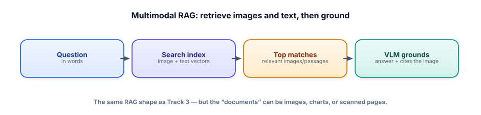

Multimodal RAG
RAG gave a model your documents. Multimodal RAG gives it your images too — product photos, charts, diagrams, scanned pages — so it can retrieve and reason over visual knowledge, not just text. It’s Track 3 with a wider definition of “document.”
Imagine a giant map where every picture and every sentence gets a pin. Pictures of red shoes and the words 'red running shoe' get pinned close together, while 'blue sofa' is pinned far away. To search, you pin your question and look at the nearest pins. Where it breaks: the map has room for the gist, not the fine print, so a pin cannot tell you a shoe's price or model number unless that information is also written in text somewhere.
Why retrieve over images
Plenty of the knowledge you’d want a system to ground on isn’t text: a product catalog is photos, a technical manual is full of diagrams, financial reports are charts, an archive is scanned pages. Text-only RAG can’t reach any of it. Multimodal RAG extends the same retrieve-then-ground pattern so the “documents” can be images: given a question, find the most relevant images (and text), and feed them to a VLM to produce a grounded, cited answer. The shape is identical to Track 3 — index, retrieve top-k, ground — only the content type widened.

Two ways to make images searchable
The only genuinely new question is: how do you retrieve images by a text query? Two approaches, both free.
1 · Shared-space embeddings (CLIP). A model like CLIP embeds images and text into the same vector space, so a text query and a matching image land near each other. You embed all your images once, then embed the query text and do the same cosine-similarity search as always — the image whose vector is closest wins. This is true image search: “a red running shoe” finds the photo even if no caption says those words.
from PIL import Image
from sentence_transformers import SentenceTransformer, util
model = SentenceTransformer("clip-ViT-B-32") # open CLIP, free
img_vecs = model.encode([Image.open(p) for p in image_paths]) # index images
q_vec = model.encode("a red running shoe") # same space!
hits = util.cos_sim(q_vec, img_vecs)[0].topk(3) # nearest images2 · Caption-then-embed. Use a VLM to describe each image in text (“a red running shoe on a white background, side view”), then embed and index those captions with your normal text pipeline. Now image retrieval is just text retrieval over the captions. It’s simpler to bolt onto an existing text-RAG system and lets you search on details a caption spells out, at the cost of an up-front captioning pass and whatever the caption leaves out.
Then ground with a VLM
Retrieval finds the relevant images; the generation step hands those images (not just captions) to a VLM along with the question, so it can actually look at them to answer — “based on the retrieved photo, this shoe has a mesh upper and a visible air unit.” That’s grounding (Track 3, Track 7) in multimodal form: the answer is anchored to retrieved visual evidence, and you can “cite” by showing the image it used. Same trust discipline, richer sources.
Facts: the open clip-ViT-B-32 model in sentence-transformers produces 512-dimensional vectors (its config's projection_dim). Image tokens follow the 28 x 28 patch rule in Anthropic vision docs; Batch API 50% off per batch docs. The catalogue size and image sizes are our assumptions.
- CLIP index size. 2,000,000 images x 512 dims x 4 bytes (float32) = 4.1 GB; at float16 about 2.0 GB. One CPU machine holds it in RAM.
- Caption-then-embed cost. Caption each 800 x 800 product photo with claude-haiku-5-5: ceil(800/28)^2 = 29 x 29 = 841 image tokens + 100 prompt = 941 input, 80 output. 941 x $0.10/M + 80 x $0.50/M = $0.000134 an image. 2M images = $268, or $134 through the Batch API. A one-off cost, re-run only for new or changed products.
- Caption index size. MiniLM caption vectors at 384 dims: 2M x 384 x 4 bytes = 3.1 GB.
- Query path. Embed the query with CLIP's text encoder and with MiniLM, take top-50 from each index (FAISS or a vector database), fuse with reciprocal rank fusion as in Track 3, then pass the top 5 images plus their captions to a VLM to answer and show the images as citations.
- Eval before choosing. 300 real queries with known-correct products. Measure recall@10 for CLIP only, captions only, and fused. Visual queries ("curved velvet sofa") tend to favour CLIP; attribute queries ("walnut, 180 cm, in stock") favour captions and metadata filters. Let the numbers pick the blend.
- Scanned documents are different. For page images full of text, models like ColPali embed page patches with a VLM and match query tokens against them, which often beats a single CLIP vector; evaluate it if your corpus is PDFs, not photos.
- Multimodal RAG widens “documents” to images (photos, charts, diagrams, scans) — same retrieve-then-ground shape as Track 3.
- Make images searchable two ways: shared-space embeddings (CLIP) for true image search, or caption-then-embed for a simpler bolt-on.
- CLIP puts images and text in one vector space, so a text query finds matching images by cosine similarity — the search you already know.
- Ground the answer by feeding retrieved images to a VLM, and “cite” by showing the image used.
- All free/open: CLIP via
sentence-transformers, a VLM via Ollama.
You’re building search for a furniture catalog of 50,000 product photos with sparse, inconsistent text descriptions. Would you use CLIP shared-space embeddings or caption-then-embed — and why? When might you combine them?
▸ Show solution & reasoning
Lean CLIP here. The text descriptions are sparse and inconsistent, so caption-then-embed would inherit those gaps unless you first generate good captions — and the whole value is letting users search by visual qualities (“mid-century walnut armchair,” “curved velvet sofa”) that the existing text doesn’t capture. CLIP embeds the images themselves into the same space as the query, so it can match on appearance directly, which is exactly what visual product search needs.
When to combine: generate VLM captions and use CLIP, then do hybrid retrieval (Track 3) — CLIP for visual similarity, caption/text search for specific attributes a description states well (material, dimensions, SKU). That mirrors dense+sparse hybrid search: each catches what the other misses. You’d let evaluation decide the blend — build a small golden set of query→correct-product pairs and measure retrieval recall for CLIP-only, captions-only, and hybrid. The instinct to measure which retrieval approach actually works on your data, rather than assuming, is the Track 3/Track 6 discipline carried into multimodal — and it’s what makes the answer sound like an engineer’s, not a guess.
What does CLIP make possible that a normal text-embedding model does not?
What makes multimodal RAG possible?
Users search a furniture catalogue for 'SKU 4471-B oak'. CLIP-only retrieval returns visually similar oak chairs but not the exact product. Why, and what fixes it?
The CLIP-vs-caption choice is a genuine engineering trade-off worth being able to reason about aloud. Shared-space embeddings shine when the query is about visual appearance and captions would be lossy or missing — product search, “find similar images,” style matching — and they need no per-image LLM pass, so indexing is cheap at scale. Their limit is that a single image vector can miss fine detail and can’t easily be searched on facts that aren’t visual (a price, a model number).
Caption-then-embed shines when you can write rich, structured descriptions (a VLM extracting specs from each product image) and want to search on those specifics with your existing text stack; its costs are the up-front captioning compute and the risk that anything the caption omits becomes unsearchable. Many strong systems use both and fuse the results — the multimodal version of hybrid search.
Evaluation ties it together and is the part candidates forget. Multimodal retrieval is measured just like text retrieval (Track 3): a golden set of queries with known-relevant images, scored with recall@k and friends — did the right image make the top-k? You measure each approach on your data because the winner is corpus-dependent: CLIP may dominate on a clean photo catalog and lose on scanned documents where a VLM’s reading of the text matters more.
And the generation half needs its own check — did the VLM’s answer actually reflect the retrieved image, or did it hallucinate (faithfulness, Track 6/12)? The through-line of this entire track is that multimodal is your familiar toolkit — retrieval, grounding, evaluation, hybrid fusion — applied to images and audio.
Master that framing and you can build, and defend, systems over any kind of data, which is exactly the range that makes a GenAI engineer valuable.
labs/03_rag_local.pyFree and offline once set up: Ollama with qwen2.5:7b, plus the packages in labs/README.md. From the course folder:
python labs/03_rag_local.pyWhat to look for: No lab embeds images (CLIP and a VLM are not part of the verified local stack). The RAG lab is the same pipeline with text: chunk, embed with MiniLM, search in DuckDB and FAISS, fuse BM25 and vector results with RRF, cite [doc-id]s and refuse below a score threshold. Watch how RRF merges the two ranked lists; in multimodal RAG one list would come from CLIP image vectors and the other from caption text. To try CLIP itself, load the sentence-transformers clip-ViT-B-32 model (check free disk first; it is a separate download).
▸ Recorded output (our run, 2026-11-03, qwen2.5:7b on a laptop GPU)
out of the top 3. On this tiny corpus dense already wins; hybrid earns its keep on big corpora full of
near-identical codes (SKUs, error ids) that embeddings blur. Never assume: measure hit@k (lab 06).
5) Grounded answers with citations, and a refusal when retrieval is weak
Q: I was charged twice for one order. What happens now?
A: If you were charged twice for one order, the duplicate payment is reversed automatically within 3 business days [pay-01#0]. If it is not reversed after 3 business days, raise a billing ticket with both transaction ids.
citations=['pay-01#0'] all-cited-ids-were-retrieved=True
Q: Can I change my delivery address after the order has shipped?
A: No, you cannot change your delivery address after the order has shipped. According to [ship-03#0], the address can only be changed before the order is packed.
citations=['ship-03#0'] all-cited-ids-were-retrieved=True
Q: Do you deliver to Antarctica by drone?
A: I don't know based on our policies. (refused before calling the LLM: best cosine 0.27 < 0.35)
citations=[] all-cited-ids-were-retrieved=True
Look: every factual sentence carries an id you can check; the off-topic question is refused
cheaply by the retrieval threshold, so the model never gets a chance to make something up.Your numbers will differ a little run to run. Full log: labs/outputs. Source: labs/03_rag_local.py.
Warm-up. How much RAM does a float32 CLIP ViT-B/32 index of 500,000 images need, and how much at int8?
▸ Solution
500,000 x 512 x 4 bytes = 1.02 GB at float32. int8 is 1 byte a dimension: 256 MB (plus small overhead for scales), usually with a small recall loss you should measure.
Transfer. Your multimodal RAG answers questions about a technical manual with diagrams. The VLM's answer cites a diagram, but engineers say the answer is not supported by it. How do you measure and reduce this?
▸ Solution
Measure faithfulness separately from retrieval: for a sample of answers, ask a judge (validated against human labels) whether every claim is supported by the retrieved images and text, and log unsupported claims. Reduce it by asking the VLM to quote or describe the specific diagram element it relied on before answering, sending the diagram at enough resolution to read its labels, including the diagram's caption and nearby text as context, and refusing when retrieval scores are low. Track faithfulness per prompt version so changes are checked.
Stretch. You must choose between CLIP embeddings and caption-then-embed for a 10-million-photo real-estate archive, and you have budget for only one in year one. Lay out the decision with costs and an experiment.
▸ Solution
Costs: CLIP is a local GPU or CPU embedding pass, no per-image API fee; the index is 10M x 512 x 4 bytes = 20.5 GB float32 (10 GB float16). Captioning at the $0.000134 per image computed for 800 x 800 photos is about $1,340 through the normal API or $670 batched, plus a 384-dim caption index of 15.4 GB. Neither is expensive, so the choice is about quality. Experiment: 1,000 photos, 200 real buyer queries ('sunny kitchen with island', '3 bedrooms near park'), recall@10 for each. Visual queries favour CLIP; factual ones (bedrooms, location) belong in structured metadata filters anyway. Pick the one that wins on visual queries, and plan to add the other later as a hybrid.
Junior What is CLIP and why is it useful for retrieval?
▸ Model answer
CLIP is a model trained on image-caption pairs so that an image and a matching caption end up close together in the same vector space. It has an image encoder and a text encoder. For retrieval, you embed all your images once, then embed a text query and find the nearest image vectors by cosine similarity. That gives you search by appearance, like 'red running shoe', even when no caption contains those words.
Mid Compare CLIP-style shared embeddings with caption-then-embed for multimodal RAG.
▸ Model answer
Shared embeddings match on appearance directly, need no per-image LLM pass, and are cheap to index at scale, but one vector misses fine detail and cannot search non-visual facts. Caption-then-embed turns images into text with a VLM, so it plugs into an existing text RAG stack and can search details the caption spells out; it costs a captioning pass and loses anything the caption omits. Many systems use both and fuse rankings, plus metadata filters for exact attributes. I decide with recall@k on real queries.
Senior Design multimodal RAG for 5 million scanned insurance documents with tables, stamps and handwriting.
▸ Model answer
Ingestion: render pages to images, run OCR for text and layout, and use a VLM to extract structured fields and describe stamps, signatures and tables. Index three ways: OCR text with BM25 for exact terms, dense text embeddings for meaning, and page-image embeddings (a ColPali-style late-interaction model) for layout-heavy pages; fuse with RRF and filter by metadata such as policy number and date. Generation: pass the top pages as images plus OCR text to a VLM, require page citations, and refuse on low scores. Evaluate retrieval recall and answer faithfulness per document type, enforce access control at retrieval, and batch the ingestion for cost.
You can now bring vision, documents, audio, and multimodal retrieval into your work. Let’s pressure-test it. Next: the interview check.